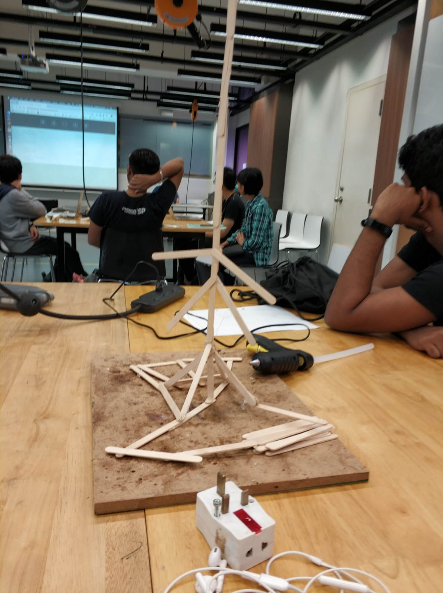

Blog
on the first day we had an ice breaker challenge
The ice breaker challenge is to built an christmas trees using 50 popstickle stick .The goal is for it to be as tall as possible while being free standing with minimum 2 float
The difficulties we faced was the stability of the christmas tree .we had to make sure the christmasa tree can hold up the weight of the star and not topple
To counter the unstability of the tree we increase the surface area that is in contact with the surface,we glue more popstickle stick together for the bas
we should have plan and organise better.organise as in split the team in to 2 where one team built the trunk of the christmas tree and another teaam focus on the base of the tree.plan as in draw out how the tree and the base area will look like.
afterwards we learn html and css to program a website.we watched the 12 minute video of html and css by jake wright
Majority of the team members have never learn how to create a website , so it was very new to us
To help us make the website we watch videos online and google solutionss
we also learn how to use fusion,Team members faced difficultties as we forgot how to use fusion or have never learn before
To counter this we use fusion more frequently
on the Second day, we did arduino and fusion